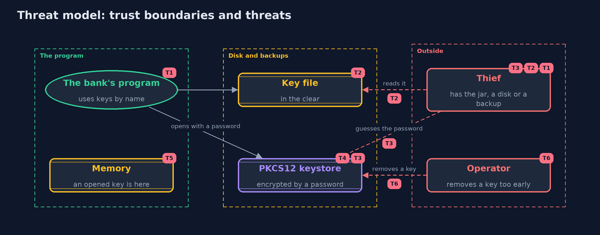

Threat Model — Keystores and Key Management Basics
A threat model answers four questions: what are we protecting, who or what could harm it, how, and what do we do about it. This one covers this project's own demo system, not a production deployment. Domain: an online bank.
Scope
Where an online bank keeps its statement key: in the code, in a key file, or in a PKCS12 keystore, how other keys are derived from passwords and master keys, and how a key is replaced. It covers a thief who has the program, a disk or a backup, and an operator who makes a mistake. It does not cover key management services or hardware modules, TLS keys, or the application's memory being read.
What we protect (assets)
- The statement key, and any key derived from it.
- The keystore file and its password.
- Every message sealed under a key that may be removed.
- The record of which key name each message carries.
Who and what acts on the system
- The bank's program, which uses keys by name.
- A thief who has a copy of the program, a disk or a backup.
- A person with a login on the machine.
- An operator who replaces or removes keys.
Trust boundaries
A trust boundary is a line that data or a request crosses between parts that trust each other differently. Threats cluster where those lines are.
- Program to repository and build servers: a key in the code crosses it for good.
- Application to the filesystem: a key file's permissions are the only guard.
- Keystore file to its password: the line a thief must cross by guessing.

Each dashed box is a trust boundary. A rose tag such as T1 shows where the threat of that number, in the table below, applies.
Threats, using STRIDE
STRIDE is a checklist of six kinds of threat: Spoofing (S), Tampering (T), Repudiation (R), Information disclosure (I), Denial of service (D), Elevation of privilege (E).
| Id | Kind | Threat | Where it shows up | Control in this project | What is left |
|---|---|---|---|---|---|
| T1 | Information disclosure | A key written in the code is read from the program, the repository or a build | HardCodedKey |
Keep keys out of the code and repositories | A key that was ever committed must be treated as leaked and replaced |
| T2 | Information disclosure | A key file is read by another user or from a backup | KeyFile |
Owner-only permissions | The file still holds the key in the clear, so backups and the owner's account must be protected too |
| T3 | Information disclosure | A stolen keystore file is attacked offline by guessing its password | KeystoreVault |
The file is encrypted and integrity-protected by a key made from the password, and a wrong password is refused | The file records only 10,000 rounds by default, so a strong password matters, and raised settings must be checked in the file |
| T4 | Tampering | A keystore file is changed | KeystoreVault.open |
The file carries an integrity code, so a changed file is refused | A deleted or replaced file is still a loss of keys, so keep a backup |
| T5 | Information disclosure | An opened key is read from the program's memory | the running program | None here | A key service or hardware module keeps keys out of the program's memory |
| T6 | Denial of service | A key is removed before old messages are sealed again, and the data is lost | KeystoreVault.remove, Messages.open |
Messages name their key, so the problem is visible, and old messages are sealed again first | A runbook and a backup are still needed, because nothing stops the removal |
Assumptions
- The keystore's password is strong and kept outside the application.
- The machine's memory is not read by an attacker.
- In the demo, keys, salts and nonces are random and never printed, and the key texts in the code are demo values.
Out of scope
- Key management services and hardware security modules.
- TLS private keys and certificates: the transport-security module.
- Secret scanning of source history.
How the tests check this
HardCodedAndFileTestchecks the key is found in the class file, and the permissions of key files.KeystoreVaultTestchecks round trips, hidden keys and names, wrong passwords, changed files and the rounds a file records.DerivationTestchecks PBKDF2 and HKDF against published values, and separate keys for separate purposes.MessagesTestchecks key names in messages, rotation, removal and refusals.DemoRunsTestcompares the whole demo with the golden output.
Where this model goes next
The next module, networking, looks at what travels between machines: sockets, names and the web. After it, transport security brings keys, certificates and signatures together in TLS.